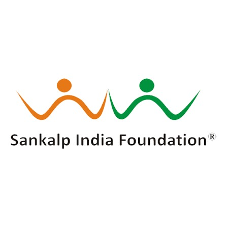

Associated with Sankalp India Foundation
THALASSEMIA CARE CENTRE
Providing compassionate and comprehensive care for individuals and families affected by thalassemia.
Contact UsOur centre is committed to providing comprehensive thalassemia care, supporting patients through regular transfusion services, laboratory monitoring, prevention programs and guidance for curative treatment options.
OUR SERVICES
Supporting thalassemia patients through every stage of their treatment and care.
Regular blood transfusion support is provided free of cost to eligible thalassemia patients as part of their ongoing care.
Laboratory investigations are supported free of cost to help monitor patients and guide appropriate thalassemia management.
Awareness, screening and counseling programs help families understand thalassemia and available prevention options.
Prenatal diagnostic services such as CVS may help families at risk of thalassemia make informed decisions with appropriate medical guidance.
We support long-term patient care through regular monitoring, treatment guidance and follow-up.
Eligible patients can receive guidance and support regarding Bone Marrow Transplantation as a potential curative treatment option.
Patients and families are guided regarding transfusion care, treatment adherence, prevention and long-term management.
Continued follow-up helps monitor the health of thalassemia patients and supports timely management of complications.
PREVENTION PROGRAM
Thalassemia prevention focuses on awareness, screening, genetic counseling and appropriate prenatal diagnostic services for families at risk.
Our centre works to improve awareness about thalassemia and help families access appropriate medical guidance.
Chorionic Villus Sampling (CVS) is a prenatal diagnostic procedure that may be considered for appropriate high-risk pregnancies under specialist medical supervision.
Bone Marrow Transplantation (BMT), also known as Hematopoietic Stem Cell Transplantation, can be a potentially curative treatment for selected patients with thalassemia.
CURATIVE CARE
We provide guidance and support to eligible patients and families who are considering transplantation as part of their thalassemia treatment journey.
ABOUT THE CENTRE
Our centre is dedicated to improving the quality of life of individuals living with thalassemia through accessible care, regular transfusion support, laboratory monitoring, prevention initiatives and guidance towards curative treatment.
CONTACT US
For thalassemia care and related information, please contact us.